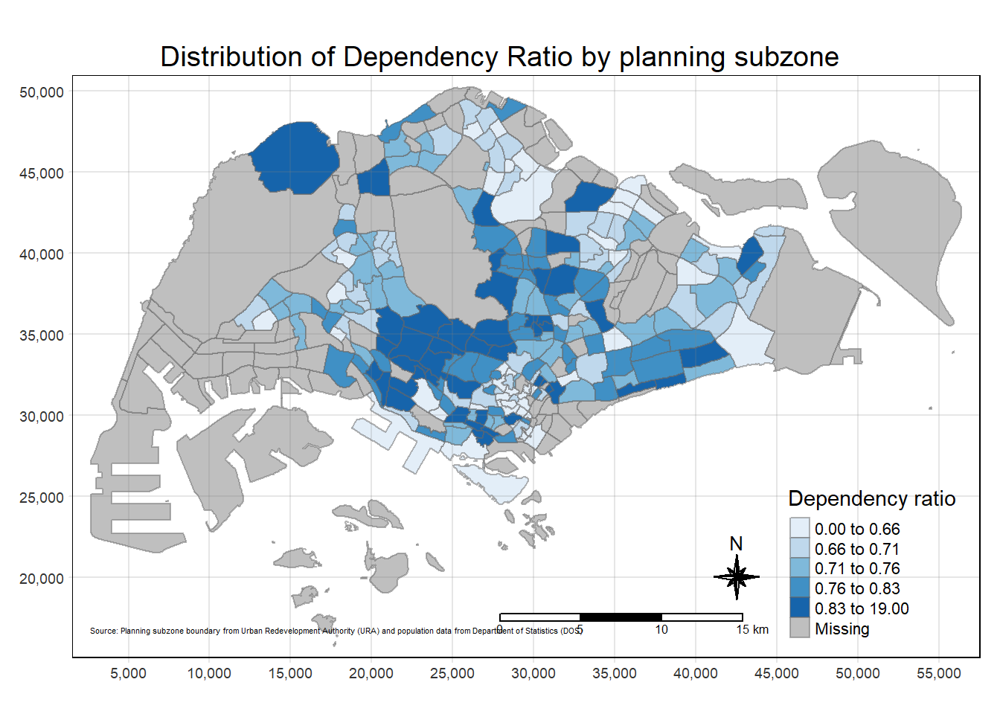
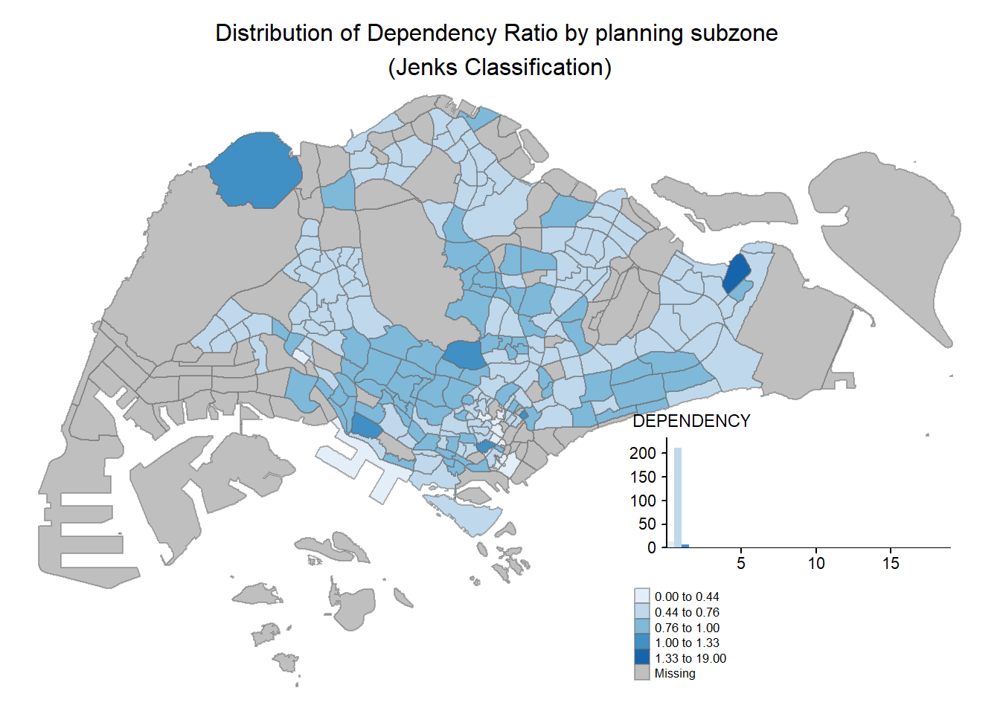
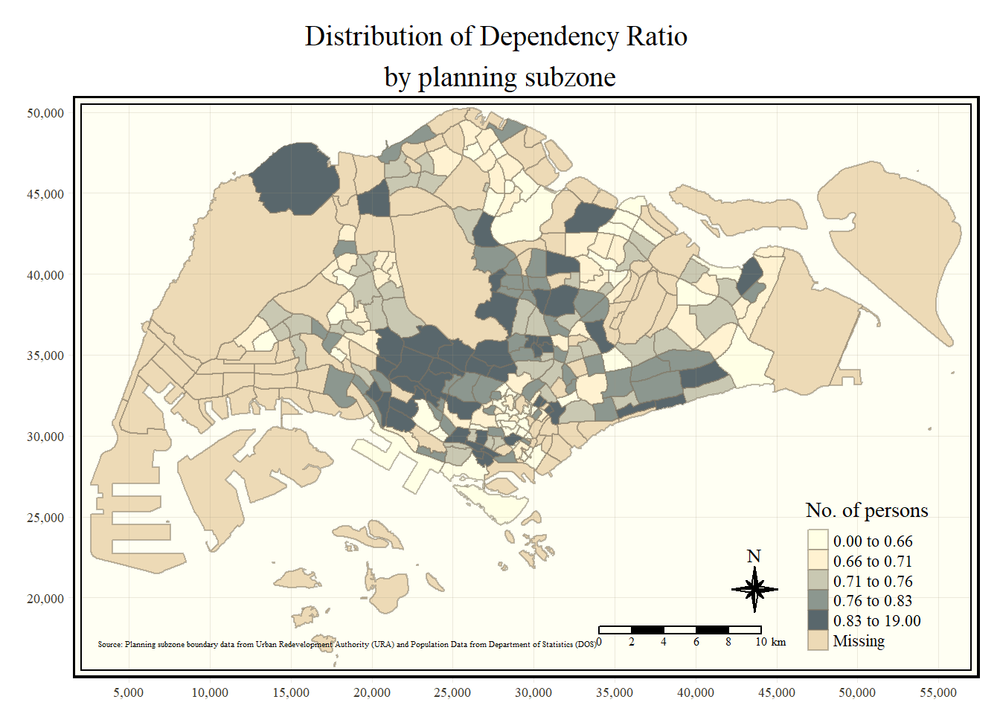
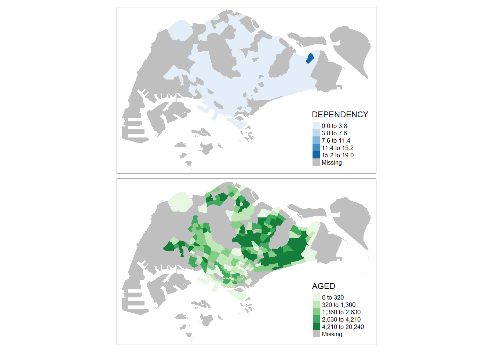

pacman::p_load(tmap,tidyverse,sf)Hands-on Exercise 1B
Thematic Mapping and GeoVisualisation with R
1.1 Overview
Thematic mapping involves the use of map symbols to visualise selected properties of geographic features that are not naturally visible i.e. population, temperate, crime rate and property prices.
Geovisualisation works by providing a geographical ideation to render a place, phenomenon or process visible. In this exercise, functional and truthful chloropleth maps will be plot using the tmappackage.
1.2 Getting Started
In this hands-on exercise, the key R package is the tmappackage and the following packages:
- readrto import delimited text file
- tidyrfor tidying data
- dplyrfor wrangling data
- sfto handle geospatial data
The first 3 packages above are part of the tidyverse package.
The packages are loaded with the following code chunk:
1.3 Importing Data into R
1.3.1 The Data
The following datasets were used to create the chloropleth map:
Master Plan 2014 Subzone Boundary (Web) (“MP14_SUBZONE_WEB_PL”) from data.gov.sg in ESRI shapefile format. This is geospatial data comprising the geographical boundary of Singapore at the planning subzone level, based on URA Master Plan 2014.
Singapore Residents by Planning Area/Subzone, Age Group, Sex and Type of Dwelling, June 2011 to 2020 (“respopagesextod2011to2020.csv”), from Department of Statistics, Singapore, in csv file format. This is an aspatial datafile, it does not contain any coordinates to the “MP14_SUBZONE_WEB_PL” shapefile.
1.3.2 Importing Geospatial Data
The following code chunk uses the st_read() function of sf package to import MP14_SUBZONE_WEB_PL shapefile as a simple feature data frame.
mpsz <- st_read(dsn="data/geospatial",
layer="MP14_SUBZONE_WEB_PL")Reading layer `MP14_SUBZONE_WEB_PL' from data source
`C:\mooseksm\ISSS626-GAA\Hands-on_Ex\Hands-on_Ex01\data\geospatial'
using driver `ESRI Shapefile'
Simple feature collection with 323 features and 15 fields
Geometry type: MULTIPOLYGON
Dimension: XY
Bounding box: xmin: 2667.538 ymin: 15748.72 xmax: 56396.44 ymax: 50256.33
Projected CRS: SVY21The content of mpsz can be examined using the code below:
mpszSimple feature collection with 323 features and 15 fields
Geometry type: MULTIPOLYGON
Dimension: XY
Bounding box: xmin: 2667.538 ymin: 15748.72 xmax: 56396.44 ymax: 50256.33
Projected CRS: SVY21
First 10 features:
OBJECTID SUBZONE_NO SUBZONE_N SUBZONE_C CA_IND PLN_AREA_N
1 1 1 MARINA SOUTH MSSZ01 Y MARINA SOUTH
2 2 1 PEARL'S HILL OTSZ01 Y OUTRAM
3 3 3 BOAT QUAY SRSZ03 Y SINGAPORE RIVER
4 4 8 HENDERSON HILL BMSZ08 N BUKIT MERAH
5 5 3 REDHILL BMSZ03 N BUKIT MERAH
6 6 7 ALEXANDRA HILL BMSZ07 N BUKIT MERAH
7 7 9 BUKIT HO SWEE BMSZ09 N BUKIT MERAH
8 8 2 CLARKE QUAY SRSZ02 Y SINGAPORE RIVER
9 9 13 PASIR PANJANG 1 QTSZ13 N QUEENSTOWN
10 10 7 QUEENSWAY QTSZ07 N QUEENSTOWN
PLN_AREA_C REGION_N REGION_C INC_CRC FMEL_UPD_D X_ADDR
1 MS CENTRAL REGION CR 5ED7EB253F99252E 2014-12-05 31595.84
2 OT CENTRAL REGION CR 8C7149B9EB32EEFC 2014-12-05 28679.06
3 SR CENTRAL REGION CR C35FEFF02B13E0E5 2014-12-05 29654.96
4 BM CENTRAL REGION CR 3775D82C5DDBEFBD 2014-12-05 26782.83
5 BM CENTRAL REGION CR 85D9ABEF0A40678F 2014-12-05 26201.96
6 BM CENTRAL REGION CR 9D286521EF5E3B59 2014-12-05 25358.82
7 BM CENTRAL REGION CR 7839A8577144EFE2 2014-12-05 27680.06
8 SR CENTRAL REGION CR 48661DC0FBA09F7A 2014-12-05 29253.21
9 QT CENTRAL REGION CR 1F721290C421BFAB 2014-12-05 22077.34
10 QT CENTRAL REGION CR 3580D2AFFBEE914C 2014-12-05 24168.31
Y_ADDR SHAPE_Leng SHAPE_Area geometry
1 29220.19 5267.381 1630379.3 MULTIPOLYGON (((31495.56 30...
2 29782.05 3506.107 559816.2 MULTIPOLYGON (((29092.28 30...
3 29974.66 1740.926 160807.5 MULTIPOLYGON (((29932.33 29...
4 29933.77 3313.625 595428.9 MULTIPOLYGON (((27131.28 30...
5 30005.70 2825.594 387429.4 MULTIPOLYGON (((26451.03 30...
6 29991.38 4428.913 1030378.8 MULTIPOLYGON (((25899.7 297...
7 30230.86 3275.312 551732.0 MULTIPOLYGON (((27746.95 30...
8 30222.86 2208.619 290184.7 MULTIPOLYGON (((29351.26 29...
9 29893.78 6571.323 1084792.3 MULTIPOLYGON (((20996.49 30...
10 30104.18 3454.239 631644.3 MULTIPOLYGON (((24472.11 29...1.3.3 Importing attribute data into R
The read_csv() function of readr package is used to import respopagesextod2011to2020.csv file and saved as a data frame called popdata:
popdata <- read_csv("data/aspatial/respopagesextod2011to2020.csv")1.3.4 Data Preparation
A data table with year 2020 values, comprising variables PA, SZ, YOUNG, ECONOMY ACTIVE, AGED, TOTAL, DEPENDENCY is first prepared.
YOUNG: age group 0 to 4 until age group 20 to 24
ECONOMY ACTIVE: age group 25-29 until age group 60-64
AGED: age group 65 and above
TOTAL: all age groups
DEPENDENCY: the ratio between young and aged against economy active group
1.3.4.1 Data Wrangling
The following data wrangling and transformation functions will be used:
pivot_wider() of tidyr package, and
mutate(), filter(), group_by() and select() of dplyr package
popdata2020 <- popdata %>%
filter(Time == 2020) %>%
group_by(PA,SZ,AG) %>%
summarise(`POP` = sum(`Pop`)) %>%
ungroup() %>%
pivot_wider(names_from=AG,
values_from=POP) %>%
mutate(`YOUNG` = rowSums(.[3:6])
+rowSums(.[12])) %>%
mutate(`ECONOMY ACTIVE` = rowSums(.[7:11])+
rowSums(.[13:15])) %>%
mutate(`AGED`=rowSums(.[16:21])) %>%
mutate(`TOTAL`=rowSums(.[3:21])) %>%
mutate(`DEPENDENCY`=(`YOUNG`+`AGED`)/`ECONOMY ACTIVE`) %>%
select(`PA`,`SZ`,`YOUNG`,`ECONOMY ACTIVE`,`AGED`,`TOTAL`,`DEPENDENCY`)1.3.4.2 Joining the attribute data and geospatial data
Before georelational join can be performed, an added step is needed to convert the values in PA and SZ to uppercase, as they are currently in both upper- and lowercase. On the other hand, the SUBZONE_N and PLN_AREA_N are in uppercase.
popdata2020 <- popdata2020 %>%
mutate_at(.vars = vars(PA,SZ),
.funs = list(toupper)) %>%
filter(`ECONOMY ACTIVE`>0)Next, left_join() of dplyr is used to join the geographical data and attribute table using planning subzone name i.e. SUBZONE_N and SZ as the common identifier:
mpsz_pop2020 <- left_join(mpsz,popdata2020,by=c("SUBZONE_N"="SZ"))left_join() of dplyr is used with the mpsz simple feature data frame as the left data table is used to ensure that the output will be a simple feature data frame.
The joined file is then saved:
write_rds(mpsz_pop2020,"data/rds/mpszpop2020.rds")1.4 Choropleth Mapping Geospatial Data using tmap
Choropleth mapping involves the symbolisation of enumeration units such as countries, provinces, states, counties or census units, using area patterns or graduated colours. For instance, a social scientist may require a choropleth map to portray the spatial distribution of aged population of Singapore by Master Plan 2014 Subzone Boundary.
Two approaches are used to prepare the thematic map using tmap:
Plotting a thematic map quickly using qtm()
Plotting a highly customisable thematic map using tmap elements
1.4.1 Plotting a choropleth map quickly using qtm()
qtm() is a concise way to provide a good default visualisation:
tmap_mode("plot")
qtm(mpsz_pop2020,
fill="DEPENDENCY")
Learning points:
tmap_mode() with “plot” option is used to produce a static map. For interactive mode, “view” option should be used
fill argument is used to map the attribute i.e. DEPENDENCY
1.4.2 Creating a choropleth map using tmap elements
The disadvantage of qtm() is that the aesthetics of individual layers are harder to control. tmap drawing elements are required to draw a high quality cartographic choropleth map:
tm_shape(mpsz_pop2020)+
tm_fill("DEPENDENCY",
style = "quantile",
palette = "Blues",
title = "Dependency ratio")+
tm_layout(main.title = "Distribution of Dependency Ratio by planning subzone",
main.title.position = "center",
main.title.size = 1.2,
legend.height = 0.45,
legend.width = 0.35,
frame = TRUE) +
tm_borders(alpha=0.5)+
tm_compass(type="8star",size=2) +
tm_scale_bar() +
tm_grid(alpha = 0.2) +
tm_credits("Source: Planning subzone boundary from Urban Redevelopment Authority (URA) and population data from Department of Statistics (DOS)",
position = c("left","bottom") )
The following section explains the tmap functions that were used to plot the above elements:
1.4.2.1 Drawing a base map
The basic building block of tmap is tm_shape() followed by one or more layer elements such as tm_fill() or tm_polygons()
In the code chunk below, tm_shape() is used to define the input data and tm_polygons() is used to draw the planning subzone polygons:
tm_shape(mpsz_pop2020) +
tm_polygons()
1.4.2.2 Drawing a choropleth map using tm_polygons()
To draw a choropleth map showing the geographical distribution of a selected variable by planning subzone, we just need to assign the target variable such as Dependency to tm_polygons():
tm_shape(mpsz_pop2020)+
tm_polygons("DEPENDENCY")
Learning points from tm_polygons():
default interval binning used to draw the choropleth map is called “pretty”
default color scheme used is
YlOrRdof ColorBrewerdefault color for missing value is a grey shade
1.4.2.3 Drawing a choropleth map using tm_fill() and tm_border()
tm_polygons() is a wrapper of tm_fill() and tm_border():
tm_fill() shades the polygons by using the default color scheme
tm_borders() add the borders of the shapefile onto the choropleth map
tm_shape(mpsz_pop2020)+
tm_fill("DEPENDENCY")
With tm_borders(), light gray border lines are added onto the choropleth map:
tm_shape(mpsz_pop2020)+
tm_fill("DEPENDENCY")+
tm_borders(lwd = 0.1, alpha = 1)
alpha argument defines the transparency number between 0 (totally transparent) to 1 (not transparent). by default, the alpha value is 1
col defines the border color
lwd defines the border line width, default is 1
lty defines the border line type, default is solid
1.4.3 Data classification methods of tmap
Most choropleth maps employ methods of data classification, which aims to take a large number of observations and group them into data ranges or classes.
tmap provides 10 data classification methods, namely: fixed, sd, equal, pretty (default), quantile, kmeans, hclust, bclust, fisher and jenks.
The style argument of tm_fill() or tm_polygons() will need to be used to define the data classification method.
1.4.3.1 Plotting choropleth maps with built-in classification methods
Quantile data classification with 5 classes:
tm_shape(mpsz_pop2020)+
tm_fill("DEPENDENCY",
n=5,
style="quantile")+
tm_borders(alpha=0.5)Equal data classification method:
tm_shape(mpsz_pop2020)+
tm_fill("DEPENDENCY",
n=5,
style="equal")+
tm_borders(alpha=0.5)
Warning
Comparing the two methods above, the distribution of the quantile method is more even than the equal distribution method. Maps can lie, below are some other methods of classification and different number of classes being tested out.
kmeans data classification with 5 classes:
tm_shape(mpsz_pop2020)+
tm_fill("DEPENDENCY",
n=5,
style="kmeans")+
tm_borders(alpha=0.5)kmeans data classification with 2 classes:
tm_shape(mpsz_pop2020)+
tm_fill("DEPENDENCY",
n=2,
style="kmeans")+
tm_borders(alpha=0.5)fisher data classification with 5 classes:
tm_shape(mpsz_pop2020)+
tm_fill("DEPENDENCY",
n=5,
style="fisher")+
tm_borders(alpha=0.5)fisher data classification with 20 classes:
tm_shape(mpsz_pop2020)+
tm_fill("DEPENDENCY",
n=20,
style="fisher")+
tm_borders(alpha=0.5)1.4.3.2 Plotting choropleth map with custom break
For all built-in styles, category breaks are computed internally. To override the defaults, the breakpoints can be set explicitly by means of breaks argument to tm_fill().
Important
In tmap, breaks include a minimum and maximum. To end up with n categories, n+1 elements must be specified in the breaks option (values must be in increasing order)
Before setting the break points, it is important and good practice to obtain the descriptive statistics:
summary(mpsz_pop2020$DEPENDENCY) Min. 1st Qu. Median Mean 3rd Qu. Max. NA's
0.1111 0.7147 0.7866 0.8585 0.8763 19.0000 92 With reference to the results above, we set the break points at 0.60, 0.70, 0.80 and 0.90. We also need to include a minimum and maximum, set at 0 and 1.00 respectively.
tm_shape(mpsz_pop2020)+
tm_fill("DEPENDENCY",
breaks=c(0,0.60,0.70,0.80,0.90,1.00)) +
tm_borders(alpha=0.5)1.4.4 Color scheme
tmap support color ramps defined by the user or a set of predefined color ramps from the RColorBrewer package.
1.4.4.1 Using ColorBrewer palette
This is done by assigning the preferred color to palette argument of tm_fill():
tm_shape(mpsz_pop2020)+
tm_fill("DEPENDENCY",
n=6,
style="quantile",
palette = "Blues")+
tm_borders(alpha=0.5)To reverse the color shading, we add a “-” prefix:
tm_shape(mpsz_pop2020)+
tm_fill("DEPENDENCY",
n=6,
style = "quantile",
palette = "-Blues")+
tm_borders(alpha = 0.5)This also applies to other palette colors like Greens:
tm_shape(mpsz_pop2020)+
tm_fill("DEPENDENCY",
n=6,
style = "quantile",
palette = "Greens")+
tm_borders(alpha = 0.5)tm_shape(mpsz_pop2020)+
tm_fill("DEPENDENCY",
n=6,
style = "quantile",
palette = "-Greens")+
tm_borders(alpha = 0.5)1.4.5 Map Layouts
Map layout refers to the combination of all map elements into a cohesive map. Map elements include title, scale bar, compass, margins and aspect ratios. 1.4.3 Data classification methods of tmap and 1.4.4 Color scheme covered above affect how the map looks.
1.4.5.1 Map Legend
Legend options include changing the placement, format and appearance of the legend:
tm_shape(mpsz_pop2020)+
tm_fill("DEPENDENCY",
style="jenks",
palette = "Blues",
legend.hist = TRUE,
legend.is.portrait = TRUE,
legend.hist.z = 0.1)+
tm_layout(main.title="Distribution of Dependency Ratio by planning subzone \n(Jenks Classification)",
main.title.position = "center",
main.title.size = 1,
legend.height = 0.45,
legend.width = 0.35,
legend.outside = FALSE,
legend.position = c("right","bottom"),
frame = FALSE)+
tm_borders(alpha = 0.5)
1.4.5.2 Map style
A variety of layout settings that can be changed are called by using tmap_style():
Classic style:
tm_shape(mpsz_pop2020)+
tm_fill("DEPENDENCY",
style = "quantile",
palette = "-Greens")+
tm_borders(alpha = 0.5)+
tmap_style("classic")1.4.5.3 Cartographic Furniture
tmap also provides arguments to draw other map furniture like compass, scale bar and grid lines i.e. through the use of tm_compass(), tm_scale_bar() and tm_grid():
tm_shape(mpsz_pop2020)+
tm_fill("DEPENDENCY",
style = "quantile",
palette = "Blues",
title = "No. of persons")+
tm_layout(main.title = "Distribution of Dependency Ratio \nby planning subzone",
main.title.position = "center",
main.title.size = 1.2,
legend.height = 0.45,
legend.width = 0.35,
frame = TRUE)+
tm_borders(alpha = 0.5)+
tm_compass(type = "8star",size=2)+
tm_scale_bar(width = 0.15)+
tm_grid(lwd = 0.1,alpha = 0.2)+
tm_credits("Source: Planning subzone boundary data from Urban Redevelopment Authority (URA) and Population Data from Department of Statistics (DOS)",
position = c("left","bottom"))
To reset to default style:
tm_shape(mpsz_pop2020)+
tm_fill("DEPENDENCY",
style = "quantile",
palette = "Blues",
title = "No. of persons")+
tm_layout(main.title = "Distribution of Dependency Ratio \nby planning subzone",
main.title.position = "center",
main.title.size = 1.2,
legend.height = 0.45,
legend.width = 0.35,
frame = TRUE)+
tm_borders(alpha = 0.5)+
tm_compass(type = "8star",size=2)+
tm_scale_bar(width = 0.15)+
tm_grid(lwd = 0.1,alpha = 0.2)+
tm_credits("Source: Planning subzone boundary data from Urban Redevelopment Authority (URA) and Population Data from Department of Statistics (DOS)",
position = c("left","bottom"))+
tmap_style("white")1.4.6 Drawing small multiple choropleth maps
Small multiple maps are also referred to as facet maps and comprise many maps arranged side-by-side and sometimes, stacked vertically. Facet maps enable the visualisation of how spatial relationships change with respect to another variable such as time.
Facet maps can be plotted in 3 ways in tmap:
by assigning multiple values to at least one of the aesthetic arguments
by defining a group-by variable in tm_facets()
by creating a multiple standalone maps with tmap_arrange()
1.4.6.1 By assigning multiple values to at least one of the aesthetic arguments
Here, we create facet maps by defining ncols in tm_fill():
tm_shape(mpsz_pop2020)+
tm_fill(c("YOUNG","AGED"),
style = "equal",
palette = "Blues")+
tm_layout(legend.position = c("right","bottom"))+
tm_borders(alpha = 0.5)+
tmap_style("white")
Another example, we assign different styles and palette:
tm_shape(mpsz_pop2020)+
tm_fill(c("DEPENDENCY","AGED"),
style = c("equal","quantile"),
palette = list("Blues","Greens"))+
tm_layout(legend.position = c("right","bottom"))
1.4.6.2 By defining a group-by variable in tm_facets()
tm_shape(mpsz_pop2020)+
tm_fill("DEPENDENCY",
style = "quantile",
palette = "Blues",
thres.poly = 0)+
tm_facets(by="REGION_N",
free.coords = TRUE,
drop.shapes = TRUE)+
tm_layout(legend.show = FALSE,
title.position = c("center","center"),
title.size = 20)+
tm_borders(alpha = 0.5)1.4.6.3 By creating a multiple standalone maps with tmap_arrange()
youngmap <- tm_shape(mpsz_pop2020)+
tm_polygons("YOUNG",
style = "quantile",
palette = "Blues")
agedmap <- tm_shape(mpsz_pop2020)+
tm_polygons("AGED",
style = "quantile",
palette = "Blues")
tmap_arrange(youngmap,agedmap,asp=1,ncol=2)
1.4.7 Mapping Spatial Object meeting a Selection Criterion
Instead of creating small multiple choropleth map, a selection function can also be used to map spatial objects meeting a selection criterion:
tm_shape(mpsz_pop2020[mpsz_pop2020$REGION_N=="CENTRAL REGION",])+
tm_fill("DEPENDENCY",
style = "quantile",
palette = "Blues",
legend.hist = TRUE,
legend.is.portrait = TRUE,
legend.hist.z = 0.1)+
tm_layout(legend.outside = TRUE,
legend.height = 0.45,
legend.width = 5.0,
legend.position = c("right","bottom"),
frame = FALSE)+
tm_borders(alpha = 0.5)